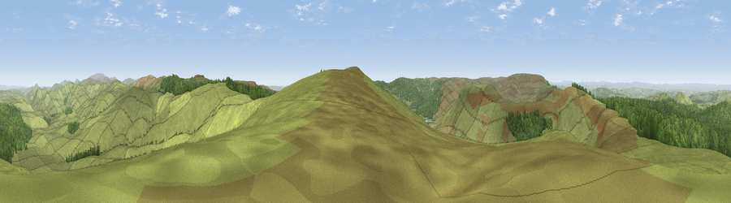

Viewpoint near Byrness
#2951 in England · top 10% of its area beats it · near Byrness · open accessWhere it is
The exact computed spot (NT 74675 06675). Click the marker for map links.
Public access: this spot lies on mapped open-access land (CRoW Act 2000) — you may roam here on foot. Computed from Natural England's CRoW access layer and OpenStreetMap rights of way — not the legal definitive map. Always verify locally.
The view, rendered

A 360° render of this exact spot computed from the terrain model, tree cover and land cover — summer colours, afternoon light, calibrated against photographs of famous viewpoints. Real trees, hedges and buildings will differ in detail.
The panorama
Grey silhouette: terrain skyline in each direction (720 bearings, Earth curvature and refraction included). Dashed green: skyline with trees (+15 m) and buildings (+8 m) as obstacles. Blue strip: how far the ground is visible on each bearing.
Where the view opens
Wedge length = distance to the farthest visible ground on that bearing (vegetation-aware). Rings at 10, 25 and 50 km.
What fills the view
82% grassland · 18% woodland ·
Angular shares of the visible panorama (visual magnitude), not map area. Landscape diversity 0.22 (0–1 Shannon).
Key numbers
More beautiful places nearby
The staircase of upgrades: each row has a higher view potential than everything closer. Driving times are estimates from straight-line distance, calibrated against real road routing — check an actual route before setting out.
| Place | Direction | Drive | Score |
|---|---|---|---|
| Hungry Law | S · 1 km | ~2 min | 75.5 |
| Viewpoint near Byrness | SE · 3 km | ~8 min | 77.0 |
| Viewpoint near Byrness | E · 3 km | ~8 min | 77.1 |
| Viewpoint c12122_7374 | W · 6 km | ~13 min | 78.9 |
| Windy Gyle | NE · 14 km | ~25 min | 79.7 |
| Viewpoint c11995_7247 | WSW · 14 km | ~26 min | 82.1 |
| Viewpoint c12273_7856 | ENE · 19 km | ~33 min | 83.7 |
| Viewpoint c12396_7887 | ENE · 24 km | ~39 min | 85.7 |
55.35343, -2.40095 · source: screening · position refined by local search. Computed location — check access rights before visiting.